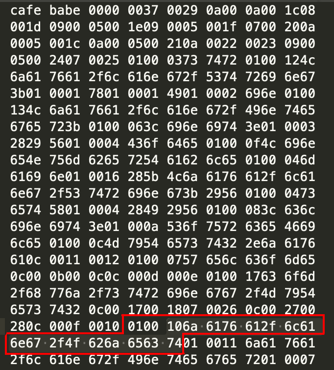

JVM_常量池
前言
Java虚拟机实现语言无关性的基石就是Class文件。从我们写的java文件到通过编译器编译成java字节码文件（也就是.class文件），这个过程是java编译过程；而我们的java虚拟机执行的就是字节码文件。不论该字节码文件来自何方，由哪种编译器编译，甚至是手写字节码文件，只要符合java虚拟机的规范，那么它就能够执行该字节码文件。
Class文件结构
- 任何一个Class文件都对应着唯一一个类或接口的定义信息，但反过来，类或接口并不一定都得定义在文件里（譬如类或接口也可以通过类加载器直接生成）。
- Class文件是一个以8位字节为单位的二进制流，各个项目严格按照顺序紧凑的排列，中间没有任何分隔符。
每一个Class文件都对应着如下所示的ClassFile结构体：这个结构体中只有两种数据类型：无符号数和表。后面的解析都要以这两种数据类型为基础。1
2
3
4
5
6
7
8
9
10
11
12
13
14
15
16
17
18ClassFile {
u4 magic;
u2 minor_version;
u2 major_version;
u2 constant_pool_count;
cp_info constant_pool[constant_pool_count-1];
u2 access_flags;
u2 this_class;
u2 super_class;
u2 interfaces_count;
u2 interfaces[interfaces_count];
u2 fields_count;
field_info fields[fields_count];
u2 methods_count;
method_info methods[methods_count];
u2 attributes_count;
attribute_info attributes[attributes_count];
}
无符号数属于基本的数据类型，以u1、u2、u4和u8分别表示1个字节、2个字节、4个字节和8个字节的无符号数。无符号数可以用来描述数字、索引引用、数量值或者按照UTF-8编码构成字符串值。
表是由多个无符号数或者其他表作为数据项构成的复合数据结构，所有表都习惯性的以”_info”结尾。表用于描述有层次关系的复合结构的数据，整个Class文件本质上就是一张表。
案例代码：
1 | public class MyTest2 { |
对应的字节码文件格式（数据太多，截取部分）：
1 | cafe babe 0000 0037 0029 0a00 0a00 1c08 |
Class文件解析
magic
魔数，u4类型的数据，占4个字节。魔数的唯一作用就是确定这个文件是否为一个能被JVM接受的Class文件。魔数值固定为0xCAFEBABE(咖啡宝贝)。
minor_version、major_version
紧接着魔数之后的4个字节是Java版本信息：第5、6字节为次版本号(minor_version)，第7、8字节为主版本号(major_version)。
以下为JDK版本与major_version的对照关系：
| 序号 | JDK版本 | major_version | 十六进制表示 |
|---|---|---|---|
| 1 | 1.1 | 45 | 0x2d |
| 2 | 1.2 | 46 | 0x2e |
| 3 | 1.3 | 47 | 0x2f |
| 4 | 1.4 | 48 | 0x30 |
| 5 | 5 | 49 | 0x31 |
| 6 | 6 | 50 | 0x32 |
| 7 | 7 | 51 | 0x33 |
| 8 | 8 | 52 | 0x34 |
| 9 | 9 | 53 | 0x35 |
| 10 | 10 | 54 | 0x36 |
| 11 | 11 | 55 | 0x37 |
| 12 | 12 | 56 | 0x38 |
constant_pool_count
常量池计数器，u2类型的数据。表示紧跟在它后面的常量池的元素个数。0029=41，
查看字节码javap -c -v -l MyTest2.class
1 | Constant pool: |
但是，我们的常量池里的个数只有40个，而且索引还是从1开始的。
设计者将第0项空出来是有特殊考虑的，这样做的目的在于满足后面某些指向常量池的索引值的数据在特定情况下需要表达”不引用任何一个常量池项目”的含义，这种情况就可以把索引值置为0来表示。
根本原因在于，索引为0也是一个常量（保留常量），只不过它不位于常量表中。这个常量就对应Null值，所以常量池的索引从1而非0开始。
常量池结构剖析
紧接其后的就是常量池了。一个Java类中定义的很多信息都是由常量池维护和描述的。可以将常量池看做Class文件的资源库。比如：Java定义的方法和变量信息，都是存储在常量池中。常量池中主要存储两类常量：字面常量和符号引用。字面常量，如文本字符串，而符号引用如类和接口的全局限定名，字段的名称和描述符，方法的名称和描述符等。
注意：常量池中存储的不一定是不变的量！如 private int x = 5，x是变量，但 “x”这个变量名字依然存在常量池中。
我们也可以把常量池当做一个数组（常量池中的每一项常量都是一个表），与一般数组不同的是，常量池数组中不同的元素类型，结构都是不同的，长度当然也不相同；但是每一个元素的第一个数据都是 u1 类型，该字节是个标志位，占 1 个字节。JVM 在解析常量池时，会根据这个 u1 类型来获取元素的具体类型。目前，常量池中出现的常量类型有 14 种，如下表：
| 类型 | 标志 | 描述 |
|---|---|---|
| CONSTANT_Utf8_info | 1 | UTF-8 编码的字符串 |
| CONSTANT_Integer_info | 3 | 整型字面量 |
| CONSTANT_Float_info | 4 | 浮点型字面量 |
| CONSTANT_Long_info | 5 | 整型字面量 |
| CONSTANT_Double_info | 6 | 双精度浮点型字面量 |
| CONSTANT_Class_info | 7 | 类或接口的符号引用 |
| CONSTANT_String_info | 8 | 字符串类型字面量 |
| CONSTANT_Fieldref_info | 9 | 字段的符号引用 |
| CONSTANT_Methodref_info | 10 | 类中方法的符号引用 |
| CONSTANT_InterfaceMethodref_info | 11 | 接口中方法的符号引用 |
| CONSTANT_NameAndType_info | 12 | 字段或方法的符号引用 |
| CONSTANT_MethodHandle_info | 15 | 表示方法句柄 |
| CONSTANT_MethodType_info | 16 | 表示方法类型 |
| CONSTANT_InvokeDynamic_info | 18 | 表示一个动态方法调用点 |
表2: 常量池中的 14 种常量项的结构总表
| 常量 | 项目 | 类型 | 描述 |
| CONSTANT_Utf8_info | tag | u1 | 值为 1 |
| length | u2 | UTF-8 编码的字符串占用的字节数 | |
| bytes | u1 | 长度为 length 的 UTF-8 编码的字符串 | |
| CONSTANT_Integer_info | tag | u1 | 值为 3 |
| bytes | u4 | 按照高位在前存储的 int 值 | |
| CONSTANT_Float_info | tag | u1 | 值为 4 |
| bytes | u4 | 按照高位在前存储的 float 值 | |
| CONSTANT_Long_info | tag | u1 | 值为 5 |
| bytes | u8 | 按照高位在前存储的 long 值 | |
| CONSTANT_Double_info | tag | u1 | 值为 6 |
| bytes | u8 | 按照高位在前存储的 double 值 | |
| CONSTANT_Class_info | tag | u1 | 值为 7 |
| index | u2 | 指向全限定名常量项的索引 | |
| CONSTANT_String_info | tag | u1 | 值为 8 |
| index | u2 | 指向字符串字面量的索引 | |
| CONSTANT_Fieldref_info | tag | u1 | 值为 9 |
| index | u2 | 指向声明字段的类或者接口描述符 CONSTANT_Class_info 的索引项 | |
| index | u2 | 指向字段描述符 CONSTANT_NameAndType 的索引项 | |
| CONSTANT_Methodref_info | tag | u1 | 值为 10 |
| index | u2 | 指向声明方法的类描述符 CONSTANT_Class_info 的索引项 | |
| index | u2 | 指向名称及类型描述符 CONSTANT_NameAndType 的索引项 | |
| CONSTANT_InterfaceMethodref_info | tag | u1 | 值为 11 |
| index | u2 | 指向声明方法的接口描述符 CONSTANT_Class_info 的索引项 | |
| index | u2 | 指向名称及类型描述符 CONSTANT_NameAndType 的索引项 | |
| CONSTANT_NameAndType_info | tag | u1 | 值为 12 |
| index | u2 | 指向该字段或方法名称常量项的索引 | |
| index | u2 | 指向该字段或方法描述符常量项的索引 | |
| CONSTANT_MethodHandle_info | tag | u1 | 值为 15 |
| reference_kind | u1 | 值必须在 1 ~ 9 之间（包含 1 和 9），它决定了方法句柄的类型。方法句柄类型的值表示方法句柄的字节码行为 | |
| reference_index | u2 | 值必须是常量池的有效索引 | |
| CONSTANT_MethodType_info | tag | u1 | 值为 16 |
| descriptor_index | u2 | 值必须是对常量池的有效索引，常量池在该索引处的项必须是 CONSTANT_Utf8_info 结构，表示方法的描述符 | |
| CONSTANT_InvokeDynamic_info | tag | u1 | 值为 18 |
| bootstrap_method_attr_index | u2 | 值必须是对当前 Class 文件中引导方法表的 bootstrap_methods[] 数组的有效索引 | |
| name_and_type_index | u2 | 值必须是对当前常量池的有效索引，常量池在该索引处的项必须是 CONSTANT_NameAndType_info 结构，表示方法名和方法描述符 |
有了这张表就可以继续剖析常量池的内容了，常量池第一个字节就是一个标志位，0x0a=10，说明第一个常量类型是 CONSTANT_Methodref_info。这是一个表类型，它对应的结构是：
1 | CONSTANT_Methodref_info { |
可知该类型常量占 1+2+2=5 个字节。紧接着后面就是第二个元素。同样的，开始是一个标志位，即 0x08=8，可知，第二个常量是 CONSTANT_String_info 类型。CONSTANT_String_info 用于表示 java.lang.String 类型的常量对象，格式如下：
1 | CONSTANT_String_info { |
所以常量池的第二个元素占 3 个字节。按照这个套餐，我们就可以找出每一个常量了。一直说到第46个常量，常量池就结束了。
常量项分析
第一个常量是 CONSTANT_Methodref_info 类型的，它描述了类中方法的符号引用。class_index 项的值必须是对常量池的有效索引，常量池在该索引处的项必须是 CONSTANT_Class_info 结构，表示一个类或接口。
- class_index 表示的索引值是 0x000a=10。根据之前
javap -v输出的常量池信息：#10 = Class #37 // java/lang/Object，我们可以知道常量池的 #10 项是 CONSTANT_Class_info 类型的常量。该类型常量用于表示类或接口，格式如下：name_index 的值，必须是对常量池的一个有效索引。常量池在该索引处的项必须是 CONSTANT_Utf8_info 结构，代表一个有效的类或接口二进制名称的内部形式。1
2
3
4CONSTANT_Class_info {
u1 tag;
u2 name_index;
}
name_index 表示的索引值是 37，（这里我直接从上面的常量池信息读出#10 = Class #37 // java/lang/Object，如果从字节码里看，此处值为 0x25=37）。所以接着找常量池第 37 项的常量类型，是 CONSTANT_Utf8_info 类型，用于表示字符串常量的值，结构如下：其中，length 项的值指明了 bytes[] 数组的长度，bytes[] 是表示字符串值的 byte 数组。 在这里，我把字符串常量池中 #37 处常量的16进制值单独拿出来看。下图框起来的部分就是完成的 CONSTANT_Utf8_info 类型常量（这里是第 #37 个常量）表示：1
2
3
4
5CONSTANT_Utf8_info {
u1 tag;
u2 lenght;
u1 bytes[lenght];
}

第一个字节是标志位，0x01=1。说明此常量类型是 CONSTANT_Utf8_info。后面2个字节是 0x10=16，表示后面 bytes[] 长度为16.所以往后数 16 个字节就是整个它表示的字符串常量。
bytes[] 第一个字节值，0x6a。根据ASCII码对照表，代表的字符是 “j”。依次的，第二个字节 0x61，代表 “a”，等等。把 16 个字节看完就得到了字符串常量 “java/lang/Object”。好了这表示一个类的全限定名。
到此，我们就把第一个常量的结构中的 class_index 解析完了。
- name_and_type_index 表示的索引值 0x001c=28。根据之前
javap -v输出的常量池信息：#28 = NameAndType #17:#18 // "<init>":()V，我们可以知道常量池的 #28 项是 CONSTANT_NameAndType_info 类型的常量。它表示当前字段或方法的名字和描述符。
后面的常量池信息，可以自行分析。
结语
本节讲的常量池时Class文件中的常量池，要记住还有运行时常量池，每个Class文件中的常量池内容在类加载时会进入方法去的运行时常量池中存放。当然运行时常量池的内容不仅包含这些还包含运行期加入的常量，常见的就是String类的intern()方法。
彩蛋
最后再附上一张 ClassFile 反编译后的图:
参考链接：
https://www.jianshu.com/p/d8492e748c57
http://ascii.911cha.com
ClassFile查看工具
转载请注明来源，欢迎对文章中的引用来源进行考证，欢迎指出任何有错误或不够清晰的表达。可以在下面评论区评论，也可以邮件至 jaytp@qq.com
文章标题:JVM_常量池
本文作者:John Doe
发布时间:2020-01-20, 15:04:21
最后更新:2020-01-20, 15:17:19
原始链接:http://yoursite.com/2020/01/20/%E6%8A%80%E6%9C%AF/JVM/JVM-%E5%B8%B8%E9%87%8F%E6%B1%A0/版权声明: "署名-非商用-相同方式共享 4.0" 转载请保留原文链接及作者。